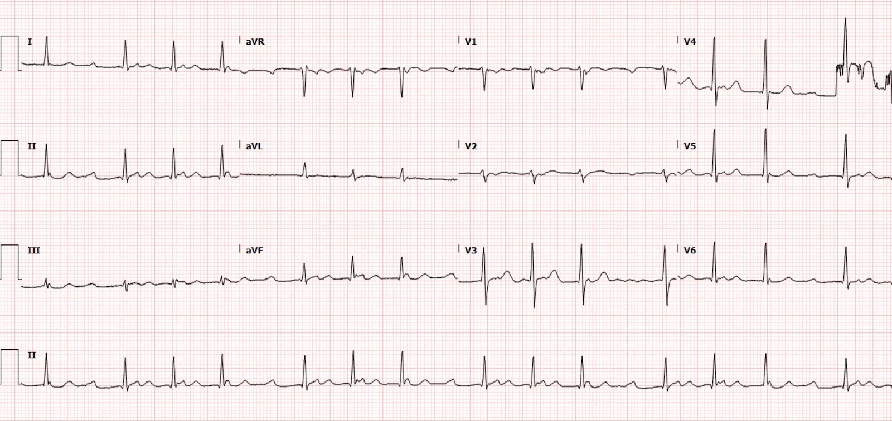
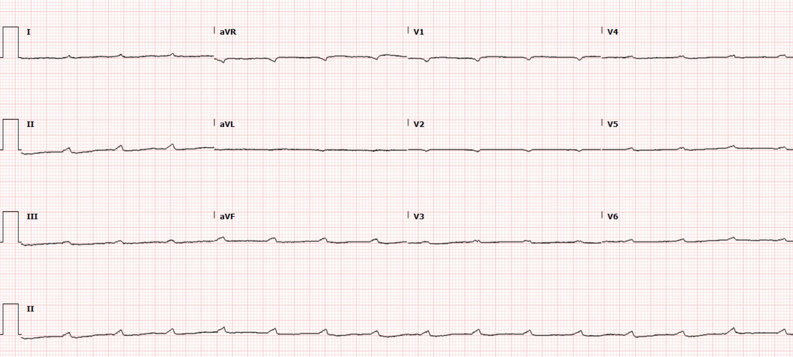
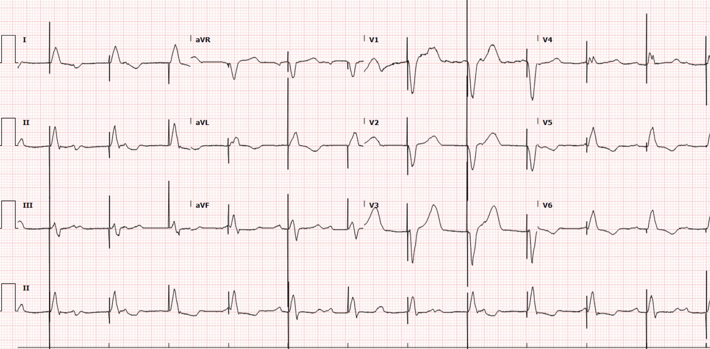
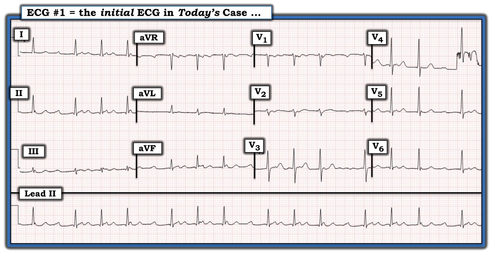
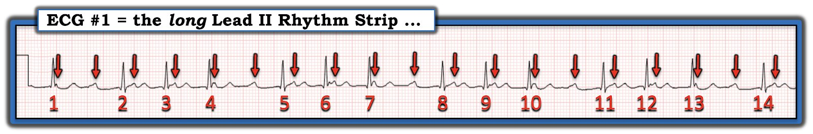
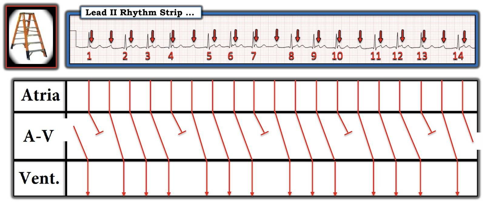

14/03/2022 — Người đàn ông 60 mấy tuổi bị ngã tưởng như do cơ học rồi co giật. Cho đến khi có điện tâm đồ.
Bản dịch tiếng Việt của bài "A man in his 60s with a seemingly mechanical fall and subsequent seizure. Until the ECG." – Dr. Smith’s ECG Blog. Giữ nguyên toàn bộ 8 hình ảnh của bản gốc.
Bài viết của Pendell Meyers
Một người đàn ông 60 mấy tuổi được đội cấp cứu ngoài viện (EMS) đưa vào khoa cấp cứu (ED) vì một cú ngã có vợ chứng kiến, sau đó là nhiều cơn hoạt động giống co giật. Ban đầu bệnh sử nghe có vẻ là một cú ngã cơ học. EMS báo cáo dấu hiệu sinh tồn bình thường, ngoại trừ “những giai đoạn nhịp chậm.” Bệnh nhân đã nhận nhiều liều benzodiazepine vì nghi có hoạt động co giật và đến khoa cấp cứu trong tình trạng rối loạn ý thức.
Bệnh nhân được đặt nội khí quản ngay sau khi đến để bảo vệ đường thở, trong bối cảnh nhiều cơn giống co giật và tri giác suy giảm rất nặng.
Đây là điện tâm đồ đầu tiên của bệnh nhân tại khoa cấp cứu:


Ban đầu điện tâm đồ này bị đọc nhầm là rung nhĩ.
Thực ra, đây là nhịp nhanh xoang khoảng 100 lần/phút kèm blốc AV độ 2 loại 1 (Wenckebach). Rung nhĩ tạo ra nhịp không đều hoàn toàn, trong khi nhịp này không đều một cách đều đặn, biểu hiện “nhịp theo nhóm” (grouped beating), trong đó các phức bộ QRS xuất hiện thành từng nhóm ba.
Điểm then chốt (pearl): mọi nhịp không đều một cách đều đặn đều khởi đầu là một nhịp đều, nhưng sau đó gặp phải hoặc nhát bị rớt (blốc AV) hoặc nhát được thêm vào (PAC, PJC, PVC).
Tôi không thấy bằng chứng nào của OMI hay tăng kali máu, cả hai đều là những nguyên nhân rất quan trọng của nhịp chậm cần được nhận ra trên điện tâm đồ.
Ban đầu không ai nhận ra blốc AV, và bệnh sử cùng hoạt động có thể là co giật đã khiến nhóm điều trị tập trung vào chẩn đoán hình ảnh thần kinh và thăm dò co giật.
Một lúc sau, bác sĩ được gọi khẩn cấp đến giường bệnh vì “có thay đổi trên monitor”, và điện tâm đồ này được ghi lại:


Chỉ có sóng P! Có các sóng P xoang khoảng 100 lần/phút kèm blốc AV hoàn toàn, và không có nhịp thoát nền nào, dẫn đến vô tâm thu thất. Nói cách khác, đó là ngừng tim.
Lý tưởng nhất, tất nhiên, là chúng ta đã không ghi được một điện tâm đồ 10 giây cảnh này, vì lẽ ra chúng ta phải bắt đầu hồi sinh tim phổi (CPR) và can thiệp bằng tạo nhịp, nhưng nó đây!
Tương tự:
Ventricular fibrillation on a 12-lead ECG (Rung thất trên điện tâm đồ 12 chuyển đạo)
Đã tiến hành tạo nhịp qua da và bắt nhịp thành công.
Một máy tạo nhịp qua tĩnh mạch (transvenous pacer) đã được đặt.
Một điện tâm đồ được ghi khi đang tạo nhịp qua tĩnh mạch:


Kali máu bình thường. Hội chứng vành cấp (ACS) đã được loại trừ.
Không còn chứng kiến thêm hoạt động co giật nào nữa.
Bệnh nhân được đặt máy tạo nhịp vĩnh viễn và đã hồi phục.
Những điểm cần học:
Ngất và co giật đôi khi rất khó phân biệt. Đôi khi ngất do tim dẫn đến co giật do giảm oxy máu và/hoặc liên quan đến ngừng tim. Cả hai tình trạng đều cần ghi điện tâm đồ để tìm bất kỳ dấu hiệu rối loạn nhịp tim nào.
Xem ca này:
What do you think of this elderly man with “possible seizure”? (Bạn nghĩ gì về người đàn ông cao tuổi này với “nghi co giật”?)
Ngất do tim kèm bất kỳ mức độ blốc AV nào đều đáng lo ngại rằng bệnh nhân có thể đã trải qua một blốc AV ở mức độ nặng hơn là nguyên nhân gây ngất, và rằng biến cố như vậy sẽ tái phát.
Bác sĩ khoa cấp cứu phải thành thạo tạo nhịp qua da và tạo nhịp qua tĩnh mạch.
Tăng kali máu và OMI do RCA là hai trong số những nguyên nhân quan trọng nhất của rối loạn nhịp chậm cần tìm trên điện tâm đồ.
Xem thêm ca này:
A New Seizure in a Healthy 20-something (Cơn co giật mới khởi phát ở một người 20 mấy tuổi khỏe mạnh)

===================================
BÌNH LUẬN CỦA TÔI, bởi KEN GRAUER, MD (14/3/2022):
===================================
Một ca bệnh sâu sắc do Dr. Meyers trình bày — với bài học quan trọng rằng hoạt động giống co giật không phải lúc nào cũng là vấn đề thần kinh. Nó có thể do tim.
- Như Dr. Meyers đã nêu — điện tâm đồ thứ 2 trong ca hôm nay cho thấy tần số nhĩ vẫn duy trì ở ~90 lần/phút, nhưng không có hoạt động thất. Thuật ngữ cho loại nhịp này có khác nhau — nhưng tôi thích gọi tình trạng mất hoạt động thất đột ngột, bất thình lình này là Ngưng thất (ventricular standstill) hơn là một biểu hiện của blốc AV.
- Một báo cáo ca bệnh của Adegoke (Paroxysmal Ventricular Standstill: Am Case Rep 21:e924381, 2020) — tương tự ca hôm nay ở chỗ biểu hiện hoạt động co giật do hậu quả của một cơn ngưng thất. Adegoke nêu các điểm: i) Hơn 20% người động kinh bị chẩn đoán sai (một số trong những chẩn đoán sai này có căn nguyên tim); ii) Ngưng thất kéo dài hơn 16 giây có thể gây hoạt động co giật; và, iii) Mặc dù ngưng thất thường gặp nhất ở bệnh nhân có bệnh tim cấu trúc nền — nó có thể xảy ra mới hoàn toàn (de novo) ở bệnh nhân không có bệnh tim từ trước.
Điện tâm đồ đầu tiên trong ca hôm nay bị chẩn đoán nhầm là AFib (Atrial Fibrillation – rung nhĩ). Tôi muốn mở rộng phần giải thích của Dr. Meyers về rối loạn nhịp này. Cho rõ ràng — tôi đã đặt lại bản ghi đầu tiên này ở Hình 1.
CÂU HỎI:
- VÌ SAO nhịp ở Hình 1 bị chẩn đoán nhầm?
TRẢ LỜI:
Đã không tuân theo một cách tiếp cận hệ thống.
Bất kể bạn chọn dùng hệ thống nào — Một khi đã bảo đảm bệnh nhân ổn định huyết động — có 5 Thông số cần đánh giá để đọc bất kỳ rối loạn nhịp tim nào. 5 Thông số này có thể dễ dàng ghi nhớ qua câu “Watch your Ps, Qs and the 3Rs” (Hãy để ý P, Q và 3 R). Hãy tập trung vào dải nhịp chuyển đạo II dài — và TÌM:
- Sự hiện diện của sóng P (hoặc dấu hiệu khác của hoạt động nhĩ).
- Độ rộng QRS.
- 3R = Tần số (Rate) và Tính đều (Regularity) của nhịp — và — nếu có sóng P, các sóng P này có Liên quan (Related) với các phức bộ QRS lân cận không?


Với một chút luyện tập — đánh giá P, Q, 3R chỉ mất vài giây. Cho rõ ràng — tôi đã tách riêng dải nhịp chuyển đạo II dài từ bản ghi đầu tiên của ca hôm nay ở Hình 2. Tôi xin nhấn mạnh những điểm sau:
- Tôi nhận thấy việc đơn giản là đánh dấu sóng P giúp ích cực kỳ lớn trong việc nhận ra các cơ chế loạn nhịp phức tạp (các mũi tên ĐỎ ở Hình 2).
- Dùng compa đo (calipers) tiết kiệm thời gian và tăng đáng kể độ chính xác khi đọc. Bạn sẽ giỏi lên ngay lập tức khi bắt đầu dùng compa đo.
- Nhịp ở Hình 2 không thể là AFib — vì có sóng P! Phải thừa nhận rằng đôi khi khó xác định nhịp nhĩ có đều hay không trên toàn bộ bản ghi, nhất là khi một số sóng P bị ẩn một phần (hoặc hoàn toàn) trong QRS hoặc sóng ST-T (như trường hợp ở Hình 2). Dù vậy — đặt compa theo khoảng P-P xác định bởi 2 sóng lệch mà bạn biết chắc là sóng P (chẳng hạn sóng P ngay trước và ngay sau nhát #2) cho phép bạn “dò bước” hoạt động nhĩ đều suốt toàn bộ dải nhịp (các mũi tên ĐỎ).
- Như Dr. Meyers đã nêu — mặc dù nhịp ở Hình 2 không đều — nó không đều một cách đều đặn (tức là có nhịp theo nhóm). Nhịp theo nhóm đôi khi dễ nhận ra nhất bằng cách lùi ra xa một chút khỏi bản ghi. Mặc dù có nhiều nguyên nhân có thể gây nhịp theo nhóm (kể cả nhịp đôi hoặc nhịp ba nhĩ) — tôi luôn cân nhắc mạnh khả năng Wenckebach AV bất cứ khi nào thấy nhịp theo nhóm.
- Có nhịp theo nhóm “hoàn hảo” ở Hình 2 (tức là các nhát #2,3,4 — 5,6,7 — 8,9,10 — và 11,12,13 tạo thành 4 nhóm 3 nhát trông giống nhau). Nên biết rằng nhịp theo nhóm trong Wenckebach AV không phải lúc nào cũng đồng đều như ở Hình 2 (tức là bạn có thể thấy hỗn hợp các nhóm 2 nhát, 3 nhát và/hoặc 4 nhát).
- Một manh mối khác của Wenckebach AV là xem có các khoảng PR lặp lại hay không. Điều này thường dễ thấy nhất khi nhìn ngay trước phức bộ QRS kết thúc mỗi khoảng ngưng ngắn (tức là trước các nhát #2, 5, 8, 11 và 14). Việc khoảng PR dài đi trước các nhát #2,5,8,11 và 14 giữ không đổi xác nhận rằng các sóng P này có dẫn truyền (và gợi ý mạnh rằng lý do của nhịp theo nhóm là Wenckebach AV).
- Phức bộ QRS hẹp và sự hiện diện của blốc AV độ 1 ở nhát thứ 1 trong mỗi nhóm là 2 dấu hiệu bổ sung ủng hộ Wenckebach AV.


Cho rõ ràng — tôi minh họa cơ chế của nhịp hôm nay bằng giản đồ bậc thang (laddergram) tôi vẽ ở Hình 3:
- Giản đồ bậc thang cho thấy nhịp là blốc AV độ 2, Mobitz loại I ( = Wenckebach AV). Vì khoảng PR của các nhát dẫn truyền kéo dài đến vậy — rất dễ bỏ sót chẩn đoán nhịp này NẾU không dùng một cách tiếp cận hệ thống.
- Giản đồ bậc thang là một công cụ tuyệt vời để minh họa cơ chế của các nhịp phức tạp. Học cách đọc giản đồ bậc thang thì DỄ. Học cách vẽ giản đồ bậc thang cần thêm chút thời gian và luyện tập. (Với ai quan tâm — Xin xem các tài liệu tham khảo tôi cung cấp bên dưới).
- T.B. (P.S.): Trong các blốc AV độ 2 — chính Mobitz II mới mang nguy cơ đáng kể gây ra các khoảng ngưng thất kéo dài. Thể Mobitz I (Wenckebach AV) gặp trong ca hôm nay không được dự đoán sẽ dẫn tới tình trạng ngưng thất khởi phát đột ngột như đã thấy ở bệnh nhân hôm nay …


======================================
Cách Vẽ một Giản đồ bậc thang (Minh họa từng bước)
- Xem ECG Blog #69 — để có mô tả Từng bước về cách vẽ một giản đồ bậc thang.
- Xem ECG Blog #188 — để xem một ECG Video ngắn ôn lại những điều cơ bản về Giản đồ bậc thang là gì — kèm các LINK ở cuối trang tới hơn 50 bài ECG blog trong đó tôi phân tích các giản đồ bậc thang minh họa.
- BẤM VÀO ĐÂY — để TẢI VỀ Khuôn Giản đồ bậc thang PowerPoint Miễn phí của tôi để bạn dùng tùy ý.
===================================